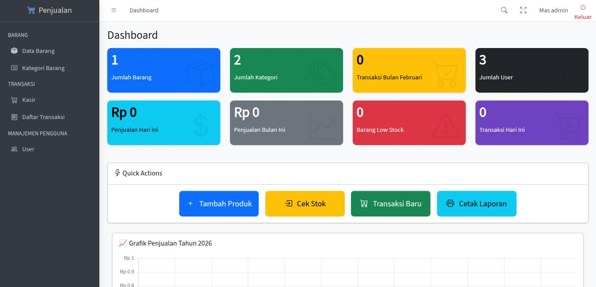

Developer with IT Support background, focused on building web applications while strengthening backend and networking fundamentals.
View ProjectsI am a Full Stack Developer (Aspiring) with one year of professional experience as an IT Support. During my time as IT Support, I handled hardware and software troubleshooting, operating system installation, and daily technical assistance for users. I also set up a small-scale network infrastructure from scratch and configured routers independently, which strengthened my understanding of networking fundamentals.
My programming journey began during college, where I developed several academic projects including my thesis web application. Currently, I focus on improving my backend development skills using PHP frameworks such as Laravel and CodeIgniter, while understanding core concepts like MVC architecture and basic database relationships.
I enjoy learning through hands-on practice by building real projects, studying documentation, watching technical discussions, and experimenting with different Linux distributions. My IT Support background has trained me to troubleshoot problems independently and think analytically — skills that I now apply in software development.
I am flexible in my career path, open to both IT Support and Developer roles, and committed to continuously improving my technical skills to become a reliable and well-rounded technology professional.
A reusable and responsive authentication login template designed for modern web applications. The template focuses on clean UI structure, user-friendly layout, and easy integration with backend authentication systems.
Key Features:
Tech Stack: HTML, CSS, JavaScript
Concepts Applied: UI layout structuring, responsive design, reusable component design.

Source CodeA full stack web application designed to manage product inventory, record sales transactions, and generate structured reports. The system implements role-based authentication to separate administrative and cashier-level access.
Key Features:
Tech Stack: HTML, CSS, JavaScript, Laravel 12
Concepts Applied: MVC architecture, database relationships (one-to-many), backend validation, session handling, and structured reporting logic.
The system was structured using MVC principles to ensure code separation, maintainability, and scalability.
Previously worked as IT Support handling daily technical operations and system troubleshooting.